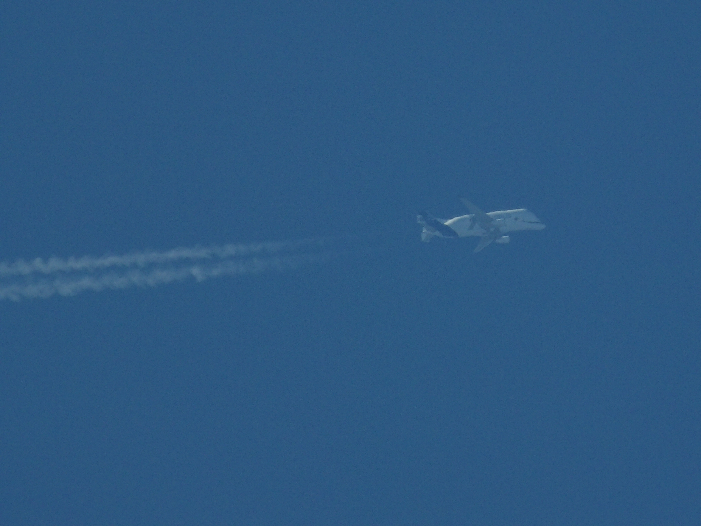
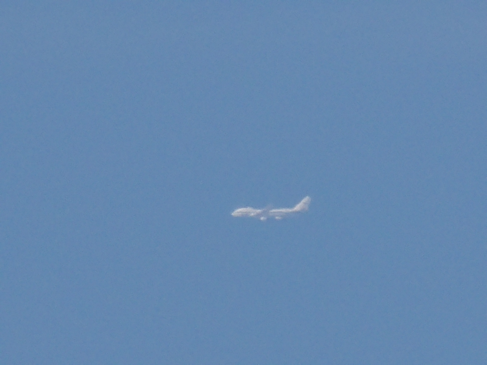
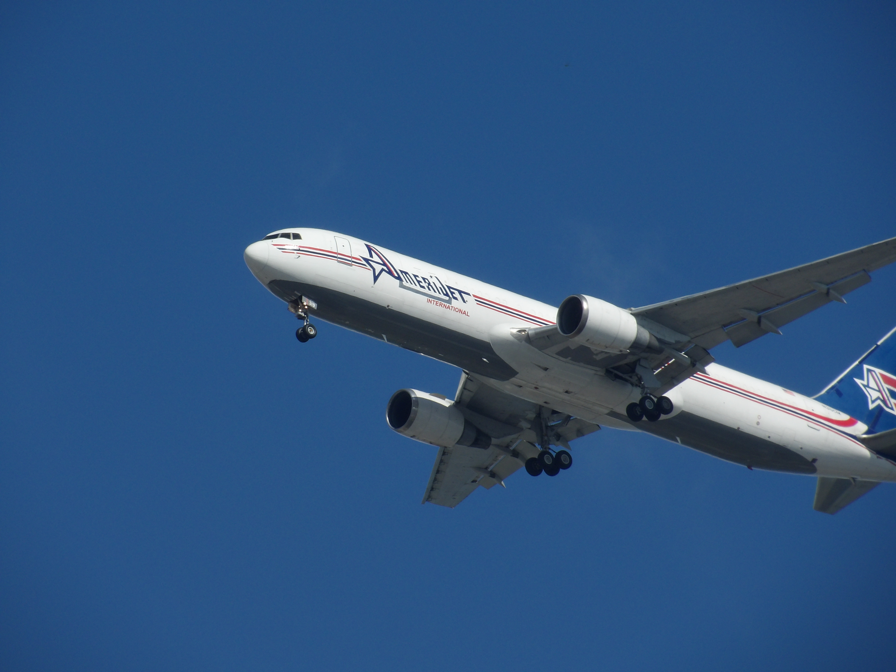
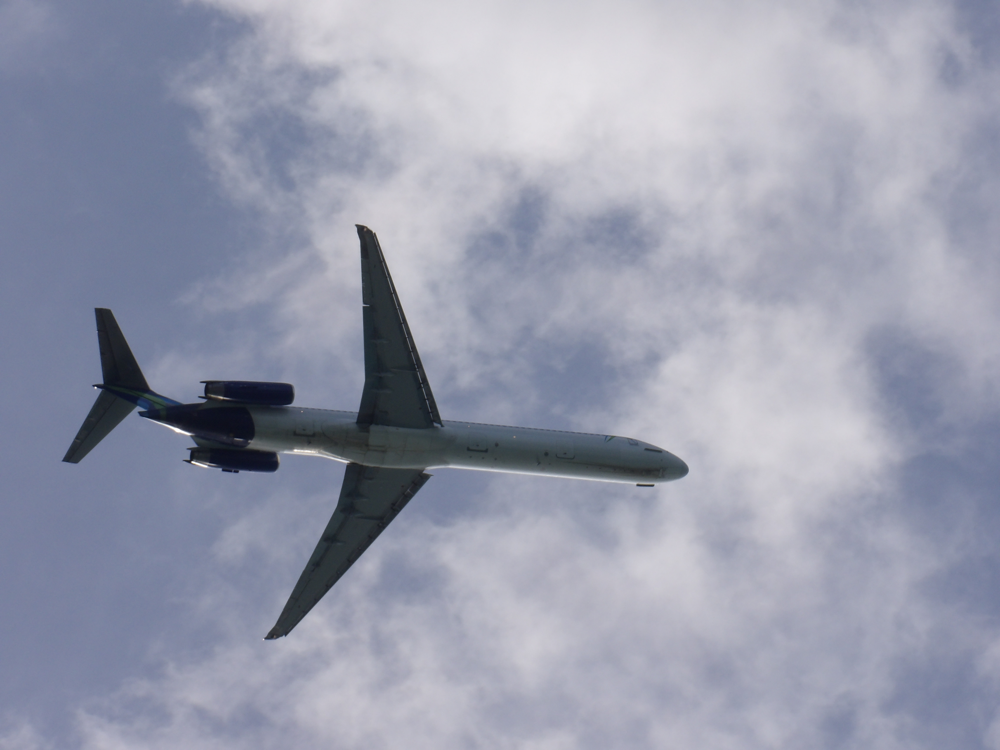
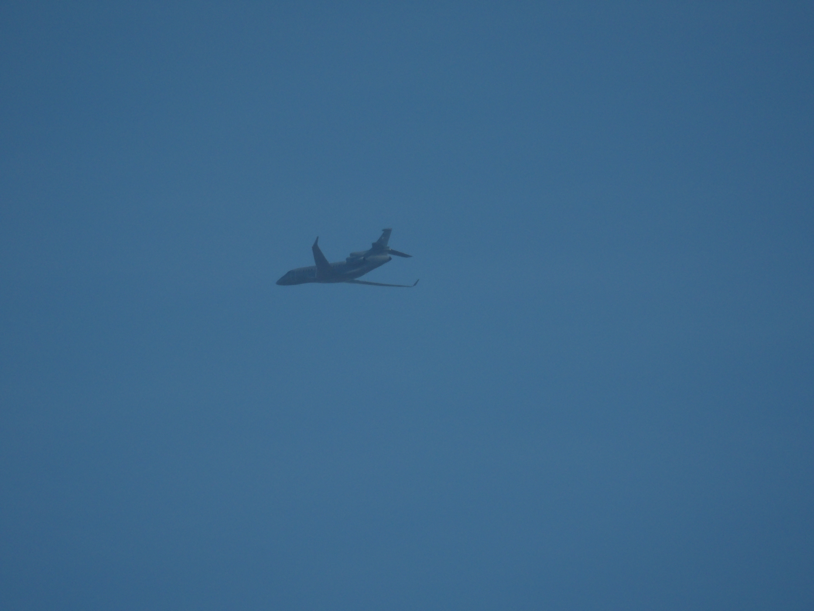

Here are the rarest aircrafts of AlphaZuluSpotting
American Airlines Boeing 737-800 “Eagle”
Airbus Beluga XL - 1 of 6 in the world
Boeing E-4B - 1 of 4 in the world
Amerijet International Boeing 767-300F - 1 of 3 in the world
World Atlantic Airlines MD-83 - 1 of 3 in the world
Hellenic Air Force Dassault Falcon 7X - 1 of 1 in the world